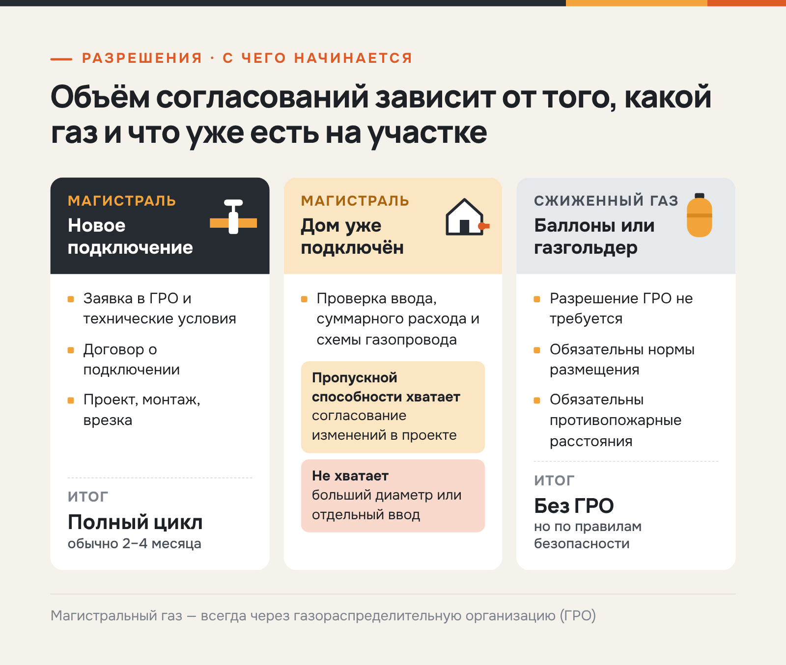
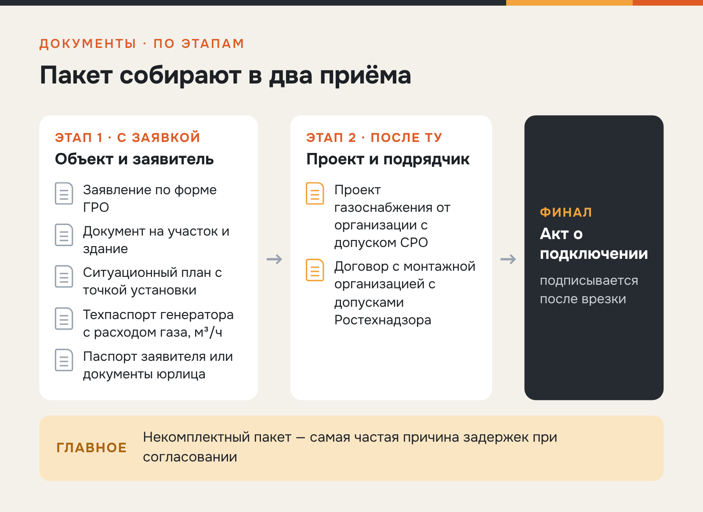
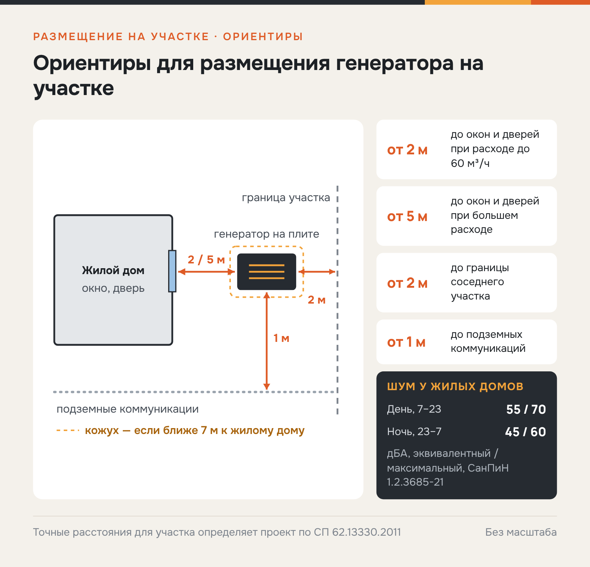

«Энергетические машины» · SEO + GEO · нормативная статья
GEO-статья для поставщика газовых генераторов: разрешения на подключение к газу
О заказчике«Энергетические машины» — компания, которая подбирает, продаёт, монтирует и обслуживает газовые генераторы для частных и коммерческих объектов. Работает с 2010 года, офисы — в Санкт-Петербурге, Москве и Краснодаре.
Задача
Объяснить владельцам и бизнесу, какие разрешения нужны для подключения газового генератора к магистральному газу, как проходит согласование с ГРО, какие документы готовить и каких ошибок избегать, — с опорой на действующие нормы.
Решение
Разделила ситуации (новое подключение, дом уже на газе, сжиженный газ), дала нормативную базу, пошаговый порядок, пакет документов, требования к размещению, типовые ошибки с ответственностью и FAQ. Регуляторные факты сверила с открытыми источниками: размеры штрафов по ст. 7.19 КоАП РФ, санкции ст. 215.3 УК РФ и нормативы шума СанПиН 1.2.3685-21; спорные формулировки смягчила, сроки по ПП № 1547 не стала указывать без проверки.
Результат
Статья опубликована в блоге en-es.ru в июне 2026 года. Нормы и штрафы сверены с СанПиН и КоАП, этапы согласования и документы разложены по шагам.
Подключение газового генератора к магистральному газу: разрешения и порядок согласования в 2026 году
Коротко. Для подключения газового генератора к магистральному газу нужны три документа: договор о подключении с газораспределительной организацией (ГРО), согласованный проект внутреннего газопровода и акт о подключении. Полный цикл обычно занимает 2–4 месяца. Для сжиженного газа (баллоны, газгольдер) разрешение ГРО не требуется, но действуют нормы размещения и пожарной безопасности.
Подключение к магистрали избавляет от заправок и доставки топлива, но требует времени на согласования. Процедуру регулируют федеральный закон, постановление Правительства и своды правил. Ниже — что проверяет ГРО, какие документы готовить и в каких случаях разрешение ГРО не нужно.
Когда нужно разрешение на установку газового генератора, а когда нет
Всё, что подключается к магистральному газопроводу, проходит согласование с ГРО — частные дома, коммерческие объекты, производства. Для сжиженного газа из баллонов или газгольдера разрешение ГРО не требуется, но нормы размещения и противопожарные расстояния обязательны. Если магистрали на участке нет, сжиженный газ — рабочая альтернатива без согласования с ГРО.

Отдельный случай — дом уже подключён к магистральному газу. Установка генератора здесь не всегда означает новое технологическое присоединение: сначала проверяют существующий ввод, суммарный расход газа с учётом генератора, схему внутреннего газопровода и необходимость изменений в проекте. Если пропускной способности хватает и схема позволяет, процедура сводится к согласованию изменений, а не к полному циклу с новыми техническими условиями.
Нормативная база
Процедура опирается на действующие федеральные акты и своды правил (полные тексты есть в справочно-правовых системах, например в «КонсультантПлюс»):
- Федеральный закон от 31.03.1999 № 69-ФЗ «О газоснабжении в Российской Федерации» — рамочный закон отрасли;
- Постановление Правительства РФ от 13.09.2021 № 1547 — правила подключения (технологического присоединения) газоиспользующего оборудования к сетям газораспределения;
- СП 62.13330.2011 «Газораспределительные системы» — требования к проектированию и размещению;
- СП 89.13330.2016 «Котельные установки» — частично применим к генерирующему оборудованию;
- СанПиН 1.2.3685-21 — гигиенические нормативы, в том числе допустимые уровни шума.
На эти документы ГРО и проектировщики опираются при проверке проекта. Перед заявкой стоит сопоставить паспортный расход генератора с разрешённым расходом по действующему вводу: от этого зависит, хватит ли изменений в проекте или понадобится новое подключение.
Пошаговый порядок согласования газового генератора
Процедура одинакова для частных домов и коммерческих объектов, различаются только сложность проекта и сроки. От заявки до подачи газа — шесть шагов:
- Заявка в ГРО на подключение. Подаётся через личный кабинет ГРО; сроки её рассмотрения установлены ПП РФ № 1547 и зависят от категории заявителя.
- Технические условия (ТУ). ГРО указывает точку подключения, разрешённый расход газа, диаметр и давление.
- Договор о подключении. Заказчик оплачивает подключение, ГРО обязуется выполнить врезку.
- Разработка проекта газоснабжения. Проект готовит организация с допуском СРО, обычно за 2–4 недели.
- Согласование проекта и монтаж. После согласования монтаж в частном доме занимает 1–3 недели.
- Пусконаладка, врезка и акт о подключении. ГРО выполняет врезку, пломбирует счётчик и подписывает акт. После этого генератор можно эксплуатировать на магистральном газе.
От заявки до акта обычно проходит 2–4 месяца. Для коммерческих объектов с расходом от 60 м³/ч срок увеличивается ещё на 1–2 месяца.
Сроки этапов ГРО задаёт постановление, а длительность проектирования и монтажа зависит от объекта. Заметнее всего на итоговый срок влияет комплектность документов — это подтверждает опыт инженеров компании.
«За 15 лет мы провели больше тысячи согласований по Санкт-Петербургу и Ленинградской области. Самая частая причина задержки — некорректно собранный пакет документов. При аккуратной подаче цикл стабильно укладывается в 2–2,5 месяца».
— главный инженер компании «Энергетические машины»
Какие документы нужны для газового генератора
Документы собирают в два приёма: базовый пакет подают вместе с заявкой, проектную и договорную часть — после получения технических условий.

Для старта процедуры понадобятся документы на объект и заявителя, а также паспорт генератора — именно по указанному в нём расходу ГРО оценивает возможность подключения. Вместе с заявкой подают:
- заявление по форме ГРО;
- документ на участок и здание (собственность или аренда);
- ситуационный план с точкой установки генератора;
- технический паспорт генератора с расходом газа, м³/ч;
- копию паспорта заявителя или учредительные документы юрлица.
После получения ТУ к пакету добавляются:
- проект газоснабжения от организации с допуском СРО;
- договор с монтажной организацией, имеющей допуски Ростехнадзора.
Если вести всю процедуру через одного подрядчика с СРО и допусками, документы не приходится передавать между несколькими исполнителями, и согласование обычно проходит быстрее.
Установка газового генератора: нормы и правила размещения
Требования к размещению газоиспользующего оборудования задаёт СП 62.13330.2011, а точные значения для конкретного участка определяет проектная организация. На практике при проектировании ориентируются на такие условия:
- от окон и дверей жилого дома — от 2 м при расходе газа до 60 м³/ч и от 5 м при большем расходе;
- до границы соседнего участка — от 2 м, до подземных коммуникаций — от 1 м;
- основание — бетонная плита с заглублением от 100 мм;
- шумозащитный кожух — если установка ближе 7 м от жилого здания;
- вентиляция в техзоне — трёхкратный воздухообмен, выхлоп отводится в сторону от окон.
Нарушение любого из этих условий — основание для отказа в приёмке. План размещения готовит проектная организация на этапе обследования.

Отдельно проверяют шум. Для территорий, непосредственно прилегающих к жилым домам, СанПиН 1.2.3685-21 устанавливает днём (с 7:00 до 23:00) эквивалентный уровень звука 55 дБА и максимальный — 70 дБА, ночью (с 23:00 до 7:00) — 45 и 60 дБА. Резервный генератор может включиться в любое время суток, поэтому при выборе места установки и кожуха ориентируются на ночные значения.
Пять типовых ошибок при согласовании
Каждая из этих ошибок может привести к отказу ГРО в приёмке объекта и к потере одного-двух месяцев на переделки. Чаще всего встречаются следующие:
- Монтаж без проекта. Без согласованного проекта ГРО не подписывает акт и не открывает подачу газа.
- Расход выше пропускной способности ввода. Существующая труба не покрывает потребление генератора — нужен больший диаметр или отдельный ввод.
- Нарушение нормативных расстояний. Самая частая претензия инспектора — размещение ближе 2 м от окон. Исправить это можно только переносом установки.
- Подрядчик без допусков Ростехнадзора. Работы организации без необходимых допусков по газу ГРО не принимает.
- Самовольная врезка в существующий газопровод. За самовольное подключение по ст. 7.19 КоАП РФ грозит штраф от 10 до 15 тыс. ₽ для граждан и от 100 до 200 тыс. ₽ для юрлиц. Если человек уже был наказан в административном порядке, повторное подключение влечёт уголовную ответственность по ст. 215.3 УК РФ.
Все пять ошибок устраняются на этапе обследования — до подачи заявки в ГРО.
Частые вопросы
Отвечаем на вопросы о разрешениях, которые владельцы задают перед покупкой генератора.
Нужно ли разрешение на газовый генератор на даче?
Для магистрального газа — да, по полной процедуре. Для сжиженного (баллоны, газгольдер) разрешение ГРО не требуется, но действуют нормы размещения и пожарной безопасности.
Можно ли установить газовый генератор без проекта?
Нет. Без согласованного проекта ГРО не подключит генератор и не подпишет акт.
Сколько занимает согласование подключения к газу?
От заявки до акта о подключении — обычно 2–4 месяца. Для крупных объектов — до 6 месяцев.
Можно ли подключить генератор к существующей газовой трубе?
Можно, если пропускная способность ввода покрывает расход. Иначе нужен больший диаметр или отдельный ввод.
Какой штраф за самовольное подключение к магистральному газу?
По ст. 7.19 КоАП РФ — от 10 до 15 тыс. ₽ для граждан, от 30 до 80 тыс. ₽ для должностных лиц и от 100 до 200 тыс. ₽ для юрлиц. Повторное нарушение после административного наказания подпадает под ст. 215.3 УК РФ: штраф до 80 тыс. ₽, обязательные работы и другие меры вплоть до лишения свободы на срок до двух лет.
Вывод
Согласование подключения к магистральному газу — предсказуемая процедура: при правильно собранных документах она занимает 2–4 месяца. Главный резерв по срокам — отсутствие переделок: одна ошибка в проекте или размещении может задержать приёмку на месяц.
Компания «Энергетические машины» ведёт согласование под ключ — от заявки в ГРО до акта о подключении. У компании есть допуски СРО и Ростехнадзора и опыт согласований в Санкт-Петербурге и Ленинградской области. Выезд инженера на обследование стоит от 5 000 ₽; при покупке оборудования эта сумма вычитается из сметы.